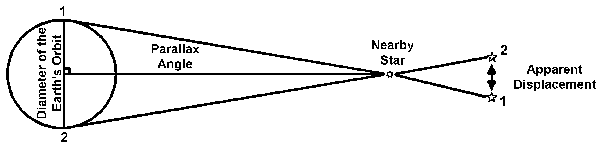

 |
| Figure 5-5 If the Earth revolves around the Sun, then its position at a six-month interval, its movement from (1) to (2), should cause a apparent displacement, or parallactic motion, in a star, just as holding a finger in front of your nose and then alternating closing one eye then the other will produce an apparent motion of your finger. If after six months no motion is observed, two explanations are possible: either the Earth does not revolve around the Sun or the stars are so far away in relation to the diameter of the Earth's orbit that the apparent motion cannot be dected by the naked eye. |